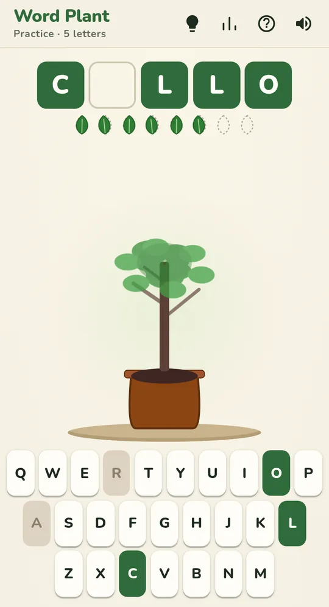
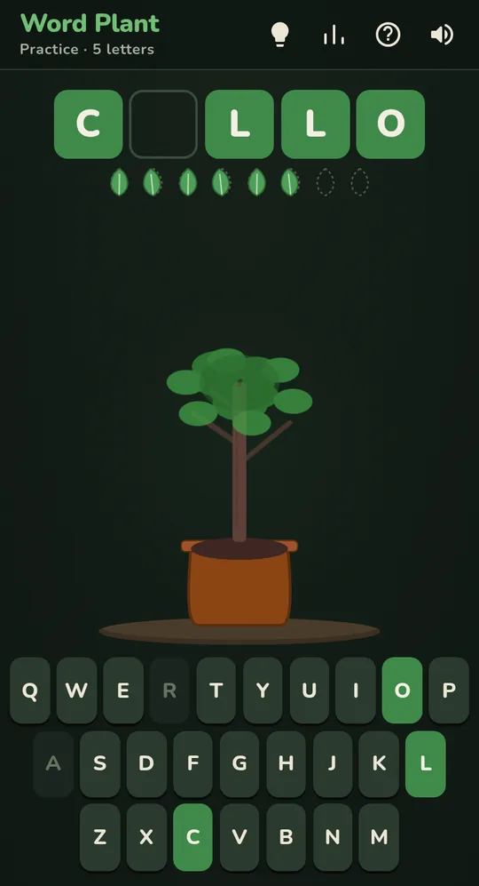

A free word game
Word Plant
Hangman without the gallows: find the word and a plant blooms.
Free, in your browser. No account, no download.
What is Word Plant?
Word Plant takes the classic letter-guessing game and swaps the gallows for a seedling. Each letter you get right feeds it. Each one you get wrong costs it a leaf. Reveal the whole word and the plant flowers.
It's free and runs in any browser on your phone, tablet or computer.
- Pick a letter
- Watch it grow
- See it bloom


Choose how to play
Why it's different
- Kinder than the classroom classic. Nothing grim on screen, just a plant that thrives or wilts with your guesses.
- Quick to play. A round takes a minute or two, so it fits a coffee break.
- Calm by design. Soft colours, a light and dark theme, and gentle sounds you can switch off.
- Results you can share. Post how your round went without giving the word away.
Learn a word every game
When a round ends, Word Plant shows what the word means, sense by sense, with its part of speech. Over weeks of play that adds up to a steady trickle of new vocabulary, which makes it a good fit for word lovers, classrooms and anyone learning English.
More word games
- Decordleten words at once
- Dordletwo words at once
- Wordle Unlimitedas many as you like
- Word Tailword chains
Decordle is on Android too. Ten words at once, wherever you are.